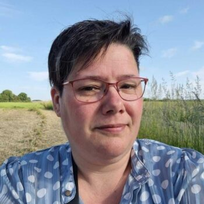
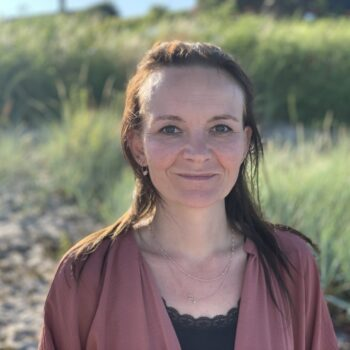
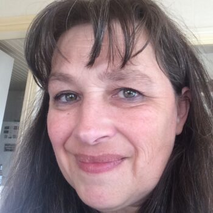
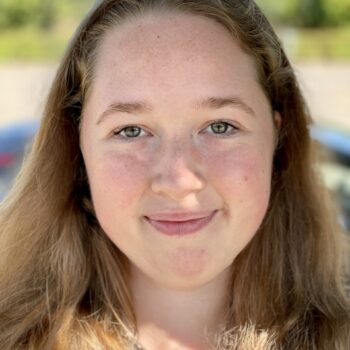
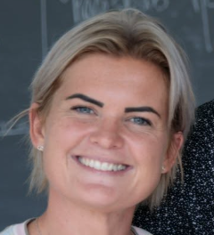

Om ADHD Bornholm
Vi er den lokale afdeling af ADHD-foreningen på Bornholm. Vores mål er at gøre øen mere ADHD-venlig — for børn, unge, voksne og deres familier.
Hvad vi arbejder for
ADHD Bornholm arbejder for at skabe netværk, cafeer og fællesskaber for alle, der er berørt af ADHD/ADD på Bornholm — uanset om det er én selv, ens barn eller en anden i familien. Alt arbejde udføres af frivillige.
Som lokalafdeling supplerer vi ADHD-foreningens landsdækkende arbejde lokalt: foreningen står for rådgivning, medlemskab og viden på landsplan, mens vi skaber det konkrete fællesskab og de faste mødesteder her på øen.
Har du idéer til nye tilbud, eller har du lyst til at blive frivillig? Vi hører meget gerne fra dig — se kontaktoplysninger.
Bestyrelsen





Personlige præsentationer tilføjes snarest.
Bliv frivillig
Vores tilbud vokser med de hænder, vi har til rådighed. Hvis du har lyst til at hjælpe med at drive en café, arrangere aktiviteter eller på anden måde støtte fællesskabet, hører vi meget gerne fra dig.
Kontakt os